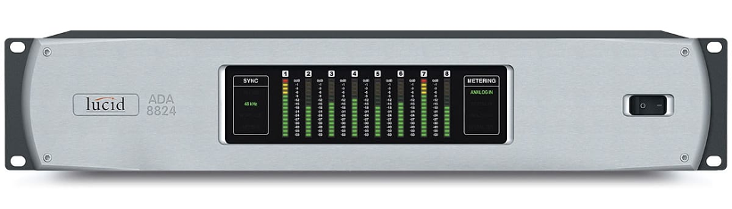

Welcome to glucid’s documentation!¶

{kind=link}
glucid controls the RS-232 version of the Lucid ADA8824
glucid is Python 3 package which provides an api as well as command-line and Graphical interfaces to configure a RS232 version Lucid ADA8824 Analog/Digital Audio Converter over a serial interface.
glucid on github
{kind=link}
glucid Command Line¶
$ glucid -g
----------------------------------------
glucid and glucid8824.py:
Copyright (C) 2017,2018 Daniel R Mechanic
GPL version 3 ONLY <http://gnu.org/licenses/gpl.html>.
This program comes with ABSOLUTELY NO WARRANTY;
This is free software, and you are welcome to
change and redistribute it under certain circumstances;
For details see LICENSE
----------------------------------------
Using /dev/ttyUSB0 to connect to lucid ID 00
Sync: WordClock
Meter: Analog Out
Analog Source: ADAT In
AES Source: ADAT In
Optical Source: Analog In
Dig Input 1,2: S/PDIF
Analog Gain:
***************************************
Recommended: +4dBu: IN -8 dB OUT +1 dB
-10dBV: IN +4 dB OUT -11 dB
***************************************
Channel 1: IN -8 dB OUT +1 dB
Channel 2: IN -8 dB OUT +1 dB
Channel 3: IN -8 dB OUT +1 dB
Channel 4: IN -8 dB OUT +1 dB
Channel 5: IN -8 dB OUT +1 dB
Channel 6: IN -8 dB OUT +1 dB
Channel 7: IN -8 dB OUT +1 dB
Channel 8: IN -8 dB OUT +1 dB
glucid Python Package¶
>>> import glucid.glucid8824 as glucid
>>> my8824 = glucid.Glucid8824()
>>> my8824.connect()
True
>>> my8824.get_meter()
'Analog Out'
>>> my8824.get_sync_source()
'44.1 Internal'
>>> my8824.set_sync_source(1)
>>> my8824.get_sync_source()
'WordClock'
Contents: